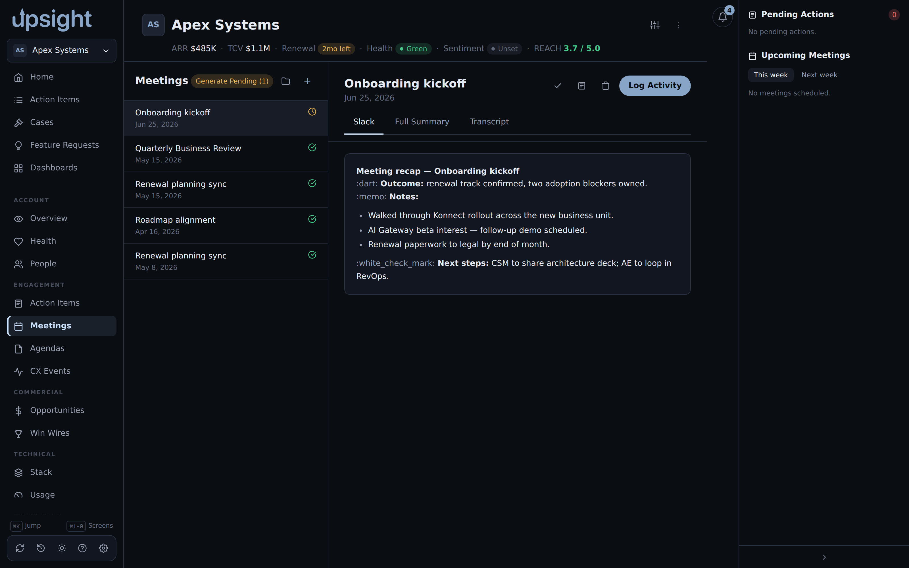

Meeting summaries¶
The Meetings tab inside an account lists past and upcoming meetings. For past meetings, Upsight can generate an AI summary from the transcript or notes.

How summaries work¶
The app passes meeting content to the claude CLI and receives a structured
summary with key topics, decisions, and action items. The CLI must be on your
PATH and authenticated for this to work.
A generated summary appears in the meeting detail panel on the right side of the Meetings screen. If none has been generated yet, the panel shows the raw notes.
Copy a summary in two formats, full Markdown or Slack Markdown, using the format buttons in the meeting detail.
The upsight summarize CLI¶
Upsight ships a companion CLI subcommand for batch-generating meeting summaries from transcripts stored on your filesystem.
upsight summarize
The CLI looks for transcript files in a configured folder structure and matches each folder to an Upsight account by name. It then generates and stores the summary inside Upsight.
Folder-to-account mapping¶
The CLI matches folder names to account names automatically when the names are the same (or close enough after normalization). When a folder name is an abbreviation or would match more than one account, you must add an explicit mapping.
Add mappings in Settings under General, "Meeting summaries." Each row maps a folder name (as the CLI sees it on disk) to a specific Upsight account. Folders that already match by name need no entry here.
The folder name match is case-insensitive.
Looking up accounts from the CLI¶
upsight accounts list and upsight accounts find use the same account
resolution the folder-to-account matching relies on, so they are the fastest
way to check why a folder isn't matching, or to get an account's exact name or
id before adding a manual mapping.
upsight accounts list
Prints every account as a two-column ID NAME table. Add --filter
<substring> to narrow it by a case-insensitive substring of the name, or
--json to get {"accounts":[{"id":...,"name":...,"slug":...}]} instead of
the table.
upsight accounts find <query>
Resolves <query> to a single account and prints its id and name. <query>
can be a numeric id, an exact account name, an account's slug, or a substring
of the name. If nothing matches, or more than one account matches the
substring, the command exits with an error and, where possible, a "did you
mean" list of the closest names, run upsight accounts list from there to see
everything. Add --id-only to print just the id, useful when piping into
another command, or --json for a machine-readable result.
The folder name matches summarize relies on go through this same resolution
order (slug, then id, then exact name, then substring), so if upsight
accounts find "<your folder name>" resolves cleanly, upsight summarize will
match that folder to the same account.
Editing a summary¶
If a generated summary is wrong or incomplete, you can edit it directly. Open the meeting in the Meetings tab, scroll to the summary, and click the edit icon. Your edits save locally and replace the generated content.
Marking meetings as processed¶
Once you review a meeting and act on its action items, you can mark it as processed using the toggle in the meeting detail panel. Processed meetings stay in the list but look different from pending ones.
Logging activity¶
From the meeting detail you can log a CX activity tied to the meeting. This creates an activity record linked to the meeting date and the relevant contact.